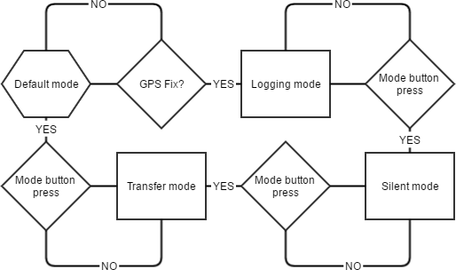

A Raspberry Pi backpack cam. The intent is to capture photos at regular intervals for later geo-located processing.

Parts List
-
Raspberry Pi 3
-
64GB (or larger) class 10 MicroSD card
-
Mini-USB battery pack
-
Push buttons
-
Raspberry Pi Camera
-
GPS breakout (Adafruit Ultimate GPS Breakout - 66 channel w/10 Hz updates - Version 3)
-
USB Wifi (TP-Link WN722N)
-
Backpack
Requirements
This guide will start with a basic Raspbian build, connected to a wired network. Follow the RPi Initial Setup Guide to get started. A Raspberry Pi 2 may also be used.
Overview
Walkingpi has a number of different modes and features that are intended to work well together. It has two main modes, the default is collection mode but it may be placed into transfer mode.
In collection mode, the walkingpi:
-
collects GPS data
-
collects wifi scan data
-
takes a photo every 30 seconds
In transfer mode, the walkingpi:
-
connects to its home base wifi
-
securely connects to a data staging server
-
transfers all collected data
-
beeps when done
Additionally, it may be placed into detail record mode when it records video instead of photos.
Walkingpi accesses the GPIO using python. The walkingpi.py will start upon boot.
Push buttons
This project uses three push buttons, a shutdown button, a collection mode toggle, and a detail record toggle. All of the button code will be in the walkingpi.py
Shutdown button
The shutdown button just calls the sudo shutdown now command. The code given here will be modified later as we add more interrupts and non-blocking threads. See Add a Shutdown Button or local pdf
#!/bin/python
# Simple script for shutting down the raspberry Pi at the press of a button.
# by Inderpreet Singh
import RPi.GPIO as GPIO
import time
import os
# Use the Broadcom SOC Pin numbers
# Setup the Pin with Internal pullups enabled and PIN in reading mode.
GPIO.setmode(GPIO.BCM)
GPIO.setup(18, GPIO.IN, pull_up_down = GPIO.PUD_UP)
# Our function on what to do when the button is pressed
def Shutdown(channel):
os.system("sudo shutdown -h now")
# Add our function to execute when the button pressed event happens
GPIO.add_event_detect(18, GPIO.FALLING, callback = Shutdown, bouncetime = 2000)
# Now wait!
while 1:
time.sleep(1)Collection mode and detail record toggle buttons
The collection mode toggle button switches between collection and transfer modes. The detail record toggle button starts and stops detail recording. Connect these buttons in the same way as the shutdown button.
| In python, I am switching from the BCM to the Board numbering scheme for GPIO. Additionally, the shutdown button is moved to pin 11, the collection toggle is on pin 13, and the detail record toggle is on pin 15. |
#!/bin/python
# Walkingpi main script
# Added Collection mode and detail record toggle buttons
import RPi.GPIO as GPIO
import time
import os
import datetime
# Use the Board Pin numbers
GPIO.setmode(GPIO.BOARD)
# Pins
BUTTON_SHUTDOWN = 11
BUTTON_COLLECTION = 13
BUTTON_RECORD = 15
collection_flag = True
record_flag = False
recording = False
# Setup the Pin with Internal pullups enabled and PIN in reading mode.
GPIO.setup(BUTTON_SHUTDOWN, GPIO.IN, pull_up_down=GPIO.PUD_UP)
GPIO.setup(BUTTON_COLLECTION, GPIO.IN, pull_up_down=GPIO.PUD_UP)
GPIO.setup(BUTTON_RECORD, GPIO.IN, pull_up_down=GPIO.PUD_UP)
##
def shutdown(channel): # Change to lowercase function name
# Modify function to require the shutdown button to be pressed and held
# for at least 2 seconds before shutting down.
GPIO.remove_event_detect(channel)
pressed_time = datetime.datetime.now()
while not GPIO.input(channel):
time.sleep(.5)
dif = datetime.datetime.now() - pressed_time
pressed_time = dif.seconds
if pressed_time > 2:
os.system("sudo shutdown -h now")
GPIO.add_event_detect(channel, GPIO.FALLING, callback=shutdown, bouncetime=200)
##
##
def collection_toggle():
global collection_flag
collection_flag = ~collection_flag
##
##
def record_toggle():
global record_flag
record_flag = ~record_flag
##
# Add button pressed event detects
GPIO.add_event_detect(BUTTON_SHUTDOWN, GPIO.FALLING, callback=shutdown, bouncetime=2000)
GPIO.add_event_detect(BUTTON_COLLECTION, GPIO.FALLING, callback=collection_toggle, bouncetime=2000)
GPIO.add_event_detect(BUTTON_RECORD, GPIO.FALLING, callback=record_toggle, bouncetime=2000)
# Main loop
while True:
if collection_flag:
# Collect data - fill in later
# Initiate GPS
# Log GPS
# Scan and log wifi
# Interval photos
if record_flag > recording:
# Stop interval photos
# Start detail recording
record_flag = False
pass
if record_flag & recording:
# Stop detail recording
# Start interval photos
record_flag = False
pass
pass
else:
# Stop collection
# Connect to home base
# Transfer data - fill in later
# Notify of completion
passLogging
WalkingPi needs to log data. Logging is a large topic area but we will limit our logging to our very basic needs. Add the following just after the import section of walkingpi.py.
import logging
# Configure logging
logfilename='/home/pi/Downloads/walkingpi.log'
logformat = '%(asctime)s - %(levelname)s - %(message)s'
logging.basicConfig(format=logformat, filename = logfilename, level=logging.DEBUG)Send messages to the logfile with the following example code.
# TEST with this code
logging.debug('debug message')
logging.info('info message')
logging.warn('warn message')
logging.error('error message')
logging.critical('critical message')
# Messages should be viewable at
# cat /home/pi/Downloads/walkingpi.logTo learn more about logging see https://docs.python.org/2/howto/logging.html and http://docs.python-guide.org/en/latest/writing/logging/.
Wireless
WiFi is needed in both collection and transfer modes. I use the Raspberry Pi 3 built-in wifi to provide an access point for monitoring while in action. The device name for the built-in wifi is wlan0.
| While the built-in wifi is very capable and sufficient for this project; I chose to use a more capable USB wifi with antenna for greater range, monitor mode, and packet injection. |
I am using the TP-Link WN722N as my monitor mode wifi using Kismet. This wifi on wlan1 will also work for injection using aircrack-ng. See Monitor and inject.
There is more than one method to bring an interface up with a different result. This guide uses separate configuration files for each mode. These are:
-
Default mode
-
wlan0 is an access point
-
Power up GPS
-
wlan1 is down and waiting for a GPS fix
-
Use _/etc/network/interfaces
-
-
Logging mode
-
wlan0 is an access point
-
wlan1 is in monitor mode with Kismet, after GPS fix
-
-
Silent mode
-
wlan0 is down
-
wlan1 is in monitor mode with Kismet, after GPS fix
-
-
Transfer mode
-
wlan0 connects to base
-
wlan1 is down
-
Power down GPS
-
Use _/etc/network/interfaces.transfer
-

Default mode
For walkingpi, wlan0 should initially load as an access point and power up the GPS. This makes it available for connection with SSH or an app. Once a GPS fix is obtained, walkingpi switches to Logging mode.
For Default and Logging modes, the pi must act as an access point. See Raspberry Pi 3 as a Simple WiFi Access Point to get this set up. Configure wlan0 in /etc/network/interfaces as indicated by that guide.
Logging mode
Kismet starts and uses wlan1 as its interface. This is done by python calling the command /usr/local/bin/kismet_server --daemonize.
Silent mode
The access point is shut down via the following commands:
-
sudo service dnsmasq stop -
sudo service hostapd stop -
sudo ifdown wlan0
Transfer mode
Logging and monitoring are stopped with the commands:
-
killall kismet_server -
sudo ifdown wlan0
wlan0 is then connected to base by:
-
sudo ifup wlan0 -i /etc/network/interfaces.base
Configuration files
Basically, there are 3 configuration files: /etc/network/interfaces, /etc/network/interfaces.base, and /etc/wpa_supplicant/wpa_supplicant.conf. Let’s get them set up.
-
sudo nano /etc/network/interfaces
allow-hotplug wlan0
iface wlan0 inet static
address 192.168.240.1
netmask 255.255.255.0
network 192.168.240.0
broadcast 192.168.240.255
allow-hotplug wlan1
iface wlan1 inet manual
-
Copy the file,
sudo cp /etc/network/interfaces /etc/network/interfaces.base -
sudo nano /etc/network/interfaces.base -
Change the wlan0 section to
allow-hotplug wlan0
iface wlan0 inet dhcp
wpa-conf /etc/wpa_supplicant/wpa_supplicant.conf
-
sudo nano /etc/wpa_supplicant/wpa_supplicant.conf -
Add the following to this file (remember to change replace your_wifi_identifier and your_wifi_password with your real values):
network={
ssid="your_wifi_identifier"
psk="your_wifi_password"
proto=RSN
key_mgmt=WPA-PSK
pairwise=CCMP
auth_alg=OPEN
}
GPS
For installation and the basics, see GPS on Raspberry Pi 3.
Kismet
Kismet is used for detecting and logging geolocated wireless networks.
| At this time the built-in wifi does not support monitor mode. |
To check if your wifi is capable of monitor mode, try the following commands. sudo ifdown wlan0 then sudo iwconfig wlan0 mode monitor and finally check with iwconfig. If you are using a USB wifi with monitor mode support, give Kismet a load. See Kismet on Raspberry Pi 3
There is an effort to get the built-in to support monitor mode. See https://github.com/seemoo-lab/bcm-rpi3.
Setup Camera
rpi_test
echo ds1307 0x68 > /sys/class/i2c-adapter/i2c-1/new_device hwclock -s
python /usr/local/scripts/monitor_sensors.py &
Next up?
After reading this guide, you may be interested in reading:
-
Processing image data (pending)